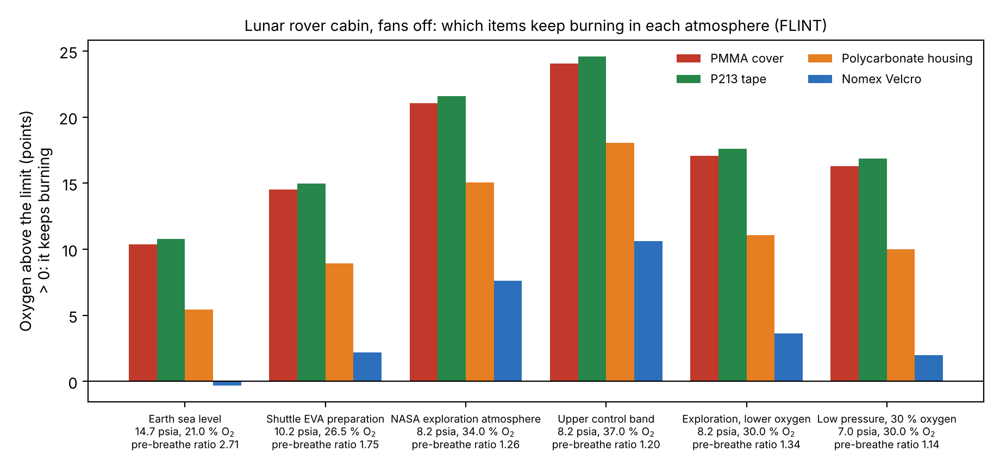

Flame in Freefall · Crew habitat fire safety
Will a flame keep spreading on the Moon?
Start with a pressurized rover. Change its atmosphere, then trace the predicted fire margin back to the experiment that supports it.
Open the rover fire caseNew to fire science? Start here: fire in space, explained in two minutes

Evidence to inspect
From flight records to predictions
Inspect FLINT’s held-out material errors, the original figures and the downloadable Python engine.
MEASURED IN ORBITWhat extinguishes a freefall flame?Compare FLEX droplets, inspect the CFI-G negative result and filter the scenario atlas by validity.
FORECAST REGISTERHow far will each fabric strip burn?Inspect the conditional FM² length forecast and independently verify its timestamp.
MISSION CONCEPTWhich fires should NASA light next?Four follow-up tests on existing hardware, each with FLINT’s prediction and the result that would prove it wrong.
START HERENew to combustion science?The whole project in plain words: oxygen limits, why gravity acts like a fan, and every term explained.
Presentation kit